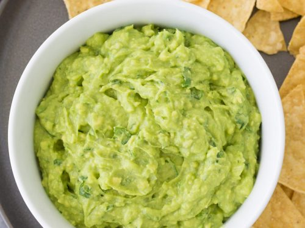

This guacamole recipe gets a tasty kick from cayenne and cilantro. You can serve it smooth or chunky depending on your tastes.
Prep time: 15min
Total time: 15min
Servings: 4
Guacamole is an avocado-based dip or spread that originated in Mexico. It's typically made with mashed avocado and lime juice,
then seasoned with salt and cilantro. Guacamole often contains tomatoes and onions.
Step 1
Mash avocados, lime juice, and salt together in a medium bowl; mix in tomatoes, onion, cilantro, and garlic. Stir in cayenne pepper.
Step 2
Serve immediately, or cover and refrigerate for 1 hour for improved flavor.
